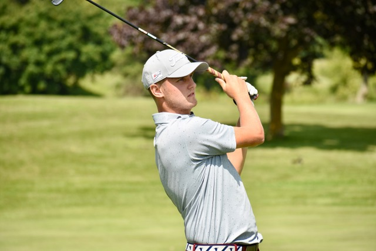
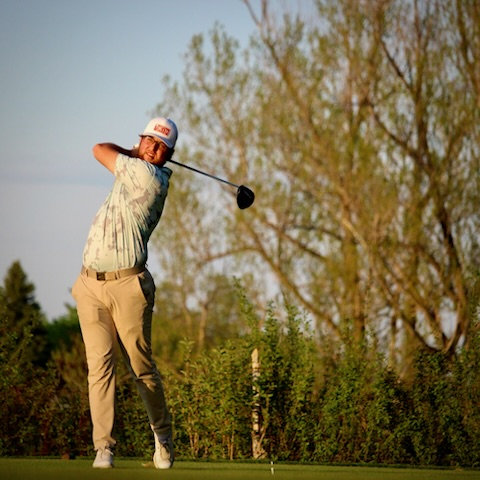

Coaching for every level of golfer
From your first lesson to dialing in a competitive game, our PGA of Canada professionals build personalized, data-informed programs, plus expert club fitting from one of the most experienced fitters around. Reach out to any of the team to get started.

Braeden Pacas
PGA of Canada Professional (2020) with a Kinesiology degree from the University of Toronto and TPI Level 1 & 2 certification.
A multi-sport background in AAA hockey, Team Ontario football and elite beach volleyball informs a holistic, personalized approach built around each player’s strengths and body mechanics.
Luke Roth
More than 10 years in the golf industry, including three seasons at the National Golf Club of Canada and time as a Titleist Product Specialist.
A Broadcast Journalism grad (York, 2010) and former Global News Toronto reporter, Luke pairs deep equipment expertise with a focus on member experience. He is your go-to for a proper club fitting.
Cullen Pacas
Completing a Kinesiology degree at the University of Toronto with PGA of Canada certification (2025) and university biomechanics-lab experience.
Runs lessons, camps and player-development programs for all ages and abilities, with a strength-and-movement focus that helps golfers build a more athletic, repeatable swing.

Rhys Barker
Coaches all skill levels, from first-timers to competitive players, with a technology-driven, data-led teaching style.
Rhys tailors every session to the individual using launch data and video, helping players make changes that hold up under pressure.
Lessons, fitting & clinics
Private Lessons
One-on-one coaching with any of our professionals, booked online through CoachNow.
Custom Club Fitting
Dialed-in fittings with Head Fitter Luke Roth using the latest launch-monitor technology.
Clinics & Programs
Yardage clinics and junior pathways for golfers of every age.